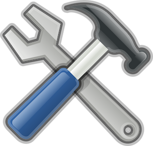

In this module you’ll use GitHub, git and vim to fix a couple of trivial scripts that just aren’t working right.
See smart people solving the very same problem
You’ll find a few of these in the SyntaxError Experience
Fork/Clone/Fix/Add/Commit/Push for a Point
30 min 1 pt closed
1 hr 1 pt closed
Outcomes assessed: Students will diagnose and correct a Python error
Assessed ability to diagnose and correct a Python error